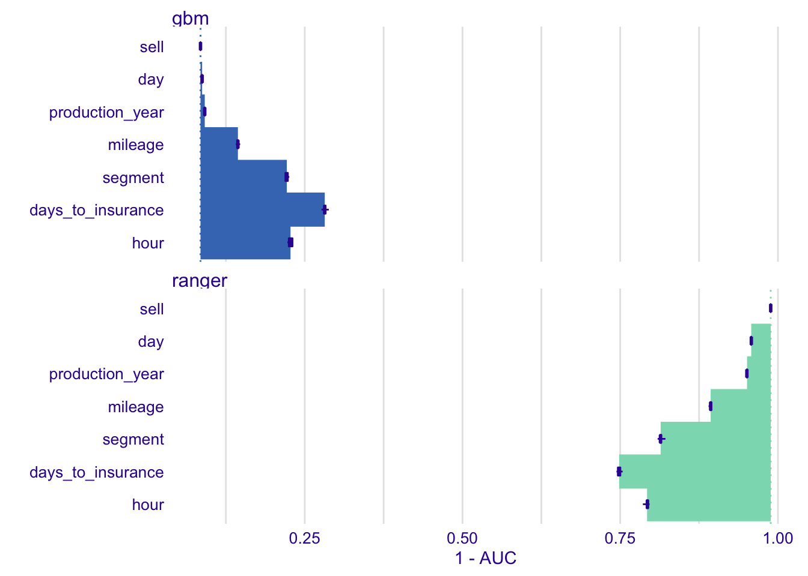
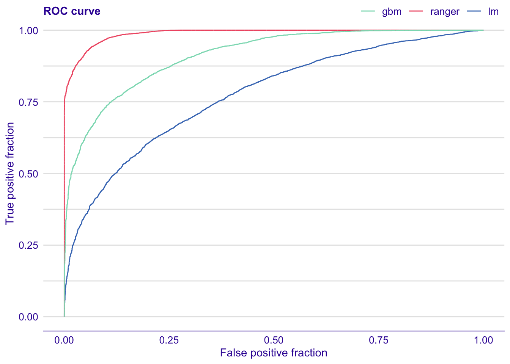

Chapter 13 SHapley Additive exPlanations (SHAP) and Average Variable Attributions
In the Section 10 we show a procedure that attributes parts of model prediction to input features. We also show that in the presence of interactions attributions depend on the feature ordering. One solution to this problem is introduced in section 11 - just find an ordering that put most important features to the front. Other solution is introduced in the Section 12 - identify interactions and show interactions in model explanations.
In this section we introduce another, very popular approach that deal with feature ordering. Basically, the problem of ordering is solved by averaging over all possible orderings. Or at least some large number of sampled orderings. Additionally, such average is closely linked with Shapley values developed originally for cooperative games.
This approach was first introduced in (Strumbelj and Kononenko 2010) and (Štrumbelj and Kononenko 2014). Wide adoption of this method comes with a NIPS 2017 paper (Lundberg and Lee 2017) and python library SHAP (Lundberg 2019). Authors of the SHAP (SHapley Additive exPlanations) method introduced an efficient algorithm for tree-based models (Lundberg, Erion, and Lee 2018) and show that Shapley values is an unification of a collection of different commonly used techniques for model explanations.
13.1 Intuition
Figure 13.1 shows Break Down attributions for 10 random orderings for Titanic dataset. As we see there are differences, most striking are that depending on the order features like fare or class may have positive or negative effect.

Figure 13.1: (fig:shap10orderings) Break Down plots for 10 random orderings. Each panel shows a single ordering
SHAP attributions are averages across all (or at least large number) of different orderings. See for example Figure 13.2. In a single plot we summarize all orderings from Figure 13.1. Violet boxplots show distributions for attributions for a selected variable.

Figure 13.2: (fig:shapOrdering) Summary for 10 random orderings. Boxplots show distribution of feature attributions. Bars stand for average attributions.
13.2 Method
SHapley Additive exPlanations are based on Shapley Values, a solution concept in cooperative game theory developed by Lloyd Shapley.
Consider a following problem. A coalition of players cooperates, and obtains a certain overall gain from that cooperation. Players are not identical, different players may have different importance. Cooperation is beneficial, from cooperation they got more than from individual actions. The problem to solve is how to distribute the generated surplus among the players? The Shapley value provides one possible fair answer to this question (Shapley 1953).
Now let’s translate this problem to machine learning settings. Instead of players we have features and instead of coalitions we have specific settings of values for features in the coalition. The payoff from a coalition is the model response for a selected setting. Problem to solve: how to distribute model response to particular features. Shapley values are defined for a single instance \(x^*\). The idea of using Shapley values for feature attribution was introduced in (Strumbelj and Kononenko 2010). Here we present a different notation more suited with approach presented in previous sections.
Let \(v(S)\) stand for value of coalition of \(S\) features, defined as \[ v(x^*, S) = E[f(X) | X_S = x^*_S]. \] The value is defined as expected model response given features in the set \(S\) are set to values in the selected instance \(x^*\). Expected value averages across all features that are not in the set \(S\).
A special case is for empty coalition. Its value is an expected model response \[ v(x^*, \emptyset) = E[f(X)]. \]
Shapley values may be defined as \[ \varphi(i) = \frac{1}{p!} \sum_{\pi} [v(x^*, \pi(i) \cup \{i\}) - v(x^*, \pi(i))] \] where \(p\) is a number of all features, \(p!\) is number of all possible orderings, \(\pi\) is an ordering and \(\pi(i)\) are all features in the ordering \(\pi\) that appear before feature \(i\). Thus the \(v(\pi(i) \cup \{i\}) - v(\pi(i))\) corresponds to a difference in value of a coalition \(v(\pi(i))\) when feature \(i\) is added to it.
Of course for large \(p\) it is not feasible to consider all \(p!\) permutations. A Monte Carlo estimator of this value was introduced in (Štrumbelj and Kononenko 2014) and efficient implementation of Shapley values was introduced in (Lundberg and Lee 2017). Later in this chapter we will use a crude estimator on \(\varphi(i)\) in which instead of all \(p!\) permutations we average across \(B\) randomly selected permutations.
Alternative formulation of Shapley values averages across coalitions not orderings.
\[ \varphi(i) = \frac 1{p}\sum_{S \subseteq \{1:p\}\setminus \{i\}} {{p-1}\choose{|S|}}^{-1} \left[ v(x^*, S \cup \{i\}) - v (x^*, S) \right] \]
Note that the number of all subsets is \(2^{p-1}\) is much smaller than number of all orderings \(p!\). Binomial coefficients weight according to number of ordering with selected prefix coalition.
Properties
Shapley values are proven to be fair. And here fairness means that they are a single unique solution with following properties. Proved for cooperative games and then translated to machine learning.
- Symmetry. If two features are interchangeable, i.e. contribute equally to all coalitions
\[ \forall_{S} v(x^*, S \cup \{i\}) = v(x^*, S \cup \{j\}) \]
then they should have equal Shapley values
\[ \varphi(i) = \varphi(j). \]
- Dummy feature. If a features does not contribute to any coalitions \[ \forall_{S} v(x^*, S \cup \{i\}) = v(x^*, S) \]
then it should have Shapley value equal to 0
\[ \varphi(i) = 0. \]
Additivity. If a model \(f\) is sum of two other models \(g\) and \(h\) then Shapley value calculated for model \(f\) is a sum of Shapley values for \(g\) and \(h\).
Local accuracy. Sum of Shapley values is equal to the model response
\[ f(x^*) - v(x^*, \emptyset) = \sum_{i=1}^p \varphi(i). \]
13.3 Titanic
Let us again consider explanation for prediction of the titanic_rf_v6 model for Johny D, an 8-years old boy from 1st class.
In Figure 13.3 we have presented distribution of attributions for random 25 orderings. As we see, young age of Johny D has positive effect in all orderings. An average age-effect is equal \(0.2525\). Similarly, effect of being male is in all cases negative for this model, on average the negative effect is \(-0.0908\).
Things get complicated for fare and class features. Depending on the order one or another is largely positive or negative. In the section 12 we showed them as a pair, which should not be separated. Here we show average attributions for each feature.
Figure 13.3: (fig:shappJohny02) Average attributions for Johny D. Violet boxplots show distributions of attributions.
Note, that in most applications the detailed information about distribution of orderings will be unnecessary complicated. So it is more common to keep only information about Shapley values as it is presented in Figure 13.4.
Figure 13.4: (fig:shappJohny01) Average attributions for Johny D.
Table 13.1 shows average attributions for Johny D.
| feature | avg. attribution |
|---|---|
| age = 8 | 0.2525 |
| class = 1st | 0.0246 |
| embarked = Southampton | -0.0032 |
| fare = 72 | 0.0140 |
| gender = male | -0.0943 |
| parch = 0 | -0.0097 |
| sibsp = 0 | 0.0027 |
13.4 Pros and cons
Shapley Values give a uniform approach to decompose model prediction into parts that can be attributed additively to variables. Below we summarize key strengths and weaknesses of this approach.
Pros
- There is a nice theory based on cooperative games.
- (Lundberg and Lee 2017) shows that this method unifies different approaches to additive features attribution, like DeepLIFT, Layer-Wise Relevance Propagation, LIME.
- There is an efficient implementation available for Python and ports or reimplementations for R.
- (Lundberg and Lee 2017) shows more desired properties of this method, like symmetry or Local accuracy.
Cons
- The exact calculation of Shapley values is time consuming.
- If the model is not additive, then the Shapley scores may be misleading. And there is no way to determine if model is far from additiveness.
- In the cooperation games the goal was to distribute payoff among payers, but in machine learning we want to understand how players affect payoff. Thus we are not limited to independent payoffs for players.
Note that for an additive model other approaches like these presented in Sections ??, 11 and 13 lead to same variable contributions.
13.5 Code snippets for R
In this section we present key features of the R package iBreakDown (Gosiewska and Biecek 2019a) which is a part of DrWhy.AI universe and covers methods presented in this chapter. More details and examples can be found at https://modeloriented.github.io/iBreakDown/.
Note that there are also other R packages that offer similar functionality, like shapper (Gosiewska and Biecek 2019b) which is a wrapper over SHAP python library (Lundberg 2019) and iml (Molnar, Bischl, and Casalicchio 2018a).
In this section, we use the random forest (Breiman et al. 2018) model titanic_rf_v6 developed for the Titanic dataset (see Section 4.1).
So let restore the titanic_rf_v6 model and explainer created with the explain() function from DALEX package (Biecek 2018).
library("DALEX")
library("randomForest")
titanic <- archivist::aread("pbiecek/models/27e5c")
titanic_rf_v6 <- archivist::aread("pbiecek/models/31570")
explain_titanic_rf <- explain(model = titanic_rf_v6,
data = titanic[,c(1:4,6:8)],
y = titanic$survived == "yes",
label = "Random Forest v6")Here again we will use a data frame johny_d with a single row, that describes an 8-years old boy that travels in the first class without parents and siblings. Then, we obtain the model prediction for this instance with the help of the `predict()’ function.
johny_d <- data.frame(
class = factor("1st", levels = c("1st", "2nd", "3rd", "deck crew", "engineering crew",
"restaurant staff", "victualling crew")),
gender = factor("male", levels = c("female", "male")),
age = 8,
sibsp = 0,
parch = 0,
fare = 72,
embarked = factor("Southampton", levels = c("Belfast", "Cherbourg", "Queenstown", "Southampton"))
)
predict(explain_titanic_rf, johny_d)## [1] 0.422First, we will recreate Figure 13.4. To do this we use function iBreakDown::shap() that calculates B random orderings and average Shapley contributions. This function takes an explainer created with DALEX::explain() function and an observation for which attributions shall be calculated. Additionally one can specify B number of orderings to sample.
The generic function plot() shows Shapley values with corresponding boxplots.

Figure 13.3 is generated in the same way. The only difference is that boxplots are not plotted. Use the show_boxplots argument to decide whatever they shall be added or not.

Function shap() results a data frame with attributions for every ordering. Having all these values we can calculated not only Shapley values (averages) but also some other statistics, like quintiles or range for feature attributions.
## min q1 median
## Random Forest v6-age 0.10631717 0.1710566380 0.252221985
## Random Forest v6-class -0.05615224 -0.0008022202 0.060401903
## Random Forest v6-embarked -0.01580879 -0.0105541459 -0.007472134
## Random Forest v6-fare -0.08729950 -0.0713928410 -0.045135931
## Random Forest v6-gender -0.17778251 -0.1248278206 -0.105988219
## Random Forest v6-parch -0.03033983 -0.0134748527 -0.009966017
## Random Forest v6-sibsp -0.01059538 -0.0059755324 -0.001904848
## mean q3 max
## Random Forest v6-age 0.2370556593 0.269811509 0.357347531
## Random Forest v6-class 0.0703436701 0.179579067 0.185606706
## Random Forest v6-embarked -0.0063245310 -0.004847558 0.007968283
## Random Forest v6-fare -0.0014576167 -0.003210340 0.195174445
## Random Forest v6-gender -0.1004931944 -0.078935433 -0.042726778
## Random Forest v6-parch -0.0116046398 -0.003649751 -0.001842320
## Random Forest v6-sibsp -0.0008288174 0.003267784 0.014658813library("dplyr")
shap_johny %>%
group_by(variable) %>%
summarise(avg = mean(contribution),
q10 = quantile(contribution, 0.1),
q90 = quantile(contribution, 0.9)) %>%
arrange(-abs(avg))## # A tibble: 7 x 4
## variable avg q10 q90
## <fct> <dbl> <dbl> <dbl>
## 1 age 0.237 0.158 0.313
## 2 gender -0.100 -0.133 -0.0555
## 3 class 0.0703 -0.0293 0.185
## 4 parch -0.0116 -0.0303 -0.00304
## 5 embarked -0.00632 -0.0124 0.00348
## 6 fare -0.00146 -0.0714 0.146
## 7 sibsp -0.000829 -0.00835 0.00824References
Strumbelj, Erik, and Igor Kononenko. 2010. “An Efficient Explanation of Individual Classifications Using Game Theory.” Journal of Machine Learning Research 11 (March). JMLR.org: 1–18. http://dl.acm.org/citation.cfm?id=1756006.1756007.
Štrumbelj, Erik, and Igor Kononenko. 2014. “Explaining Prediction Models and Individual Predictions with Feature Contributions.” Knowledge and Information Systems 41 (3): 647–65. https://doi.org/10.1007/s10115-013-0679-x.
Lundberg, Scott M, and Su-In Lee. 2017. “A Unified Approach to Interpreting Model Predictions.” In Advances in Neural Information Processing Systems 30, edited by I. Guyon, U. V. Luxburg, S. Bengio, H. Wallach, R. Fergus, S. Vishwanathan, and R. Garnett, 4765–74. Curran Associates, Inc. http://papers.nips.cc/paper/7062-a-unified-approach-to-interpreting-model-predictions.pdf.
Lundberg, Scott. 2019. SHAP (SHapley Additive exPlanations). https://github.com/slundberg/shap.
Lundberg, Scott M., Gabriel G. Erion, and Su-In Lee. 2018. “Consistent Individualized Feature Attribution for Tree Ensembles.” CoRR abs/1802.03888. http://arxiv.org/abs/1802.03888.
Shapley, Lloyd S. 1953. “A Value for N-Person Games.” In Contributions to the Theory of Games Ii, edited by Harold W. Kuhn and Albert W. Tucker, 307–17. Princeton: Princeton University Press.
Gosiewska, Alicja, and Przemyslaw Biecek. 2019a. “iBreakDown: Uncertainty of Model Explanations for Non-additive Predictive Models.” https://arxiv.org/abs/1903.11420v1.
Gosiewska, Alicja, and Przemyslaw Biecek. 2019b. shapper: Wrapper of Python Library ’shap’. https://github.com/ModelOriented/shapper.
Molnar, Christoph, Bernd Bischl, and Giuseppe Casalicchio. 2018a. “Iml: An R Package for Interpretable Machine Learning.” JOSS 3 (26). Journal of Open Source Software: 786. https://doi.org/10.21105/joss.00786.
Breiman, Leo, Adele Cutler, Andy Liaw, and Matthew Wiener. 2018. RandomForest: Breiman and Cutler’s Random Forests for Classification and Regression. https://CRAN.R-project.org/package=randomForest.
Biecek, Przemyslaw. 2018. DALEX: Descriptive mAchine Learning Explanations. https://pbiecek.github.io/DALEX/.